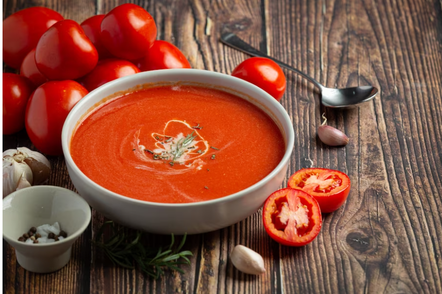

Tomato Soup

Description
One spoonful of tomato soup has the power to automatically transport you back to your childhood.
The tasty soup is the ultimate comfort food, especially when it's homemade.
This tomato soup recipe uses fresh tomatoes and will remind you of your mom's famous cooking.
Sure the can of tomato soup works in a time crunch, but nothing beats the delicious flavors of a soup you made from scratch with fresh ingredients.
So say goodbye to canned soup forever and hello to your new favorite tomato soup recipe.
Ingredients
- 4 cups chopped fresh tomatoes
- 2 cups chicken broth
- 4 cloves garlic
- 2 tablespoon butter
- 2 tablespoon all purpose flour
- 2 teaspoons white sugar, or to taste
Steps
- Gather all ingredients
- Combine tomatoes,chicken broth ,garlic cloves , and a large slice of onion in a stockpot over medium heat. Bring to boil, and gently simmer for about 20 minutes to blend the flavours.
- Remove form the heat and run the mixture through a food mill into a large bowl, or a pan .Discard any stuff left over in the food mill.
- Melt the butter over medium heat in the now empty stockpot. Stir in flour to make a roux by cooking ,whisking constantly, until mixture turns medium brown.
- Gradually whisk in a bit of the tomato mixture to prevent lumps from forming, then stir in the rest.
- Season with sugar and salt to taste
- Serve hot and enjoy!